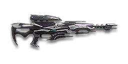

← Back to the Phaseshift VX-S comparison
Sage Guide · Vanu Sovereignty · Infiltrator
The Vanu heat-powered hybrid. It costs 1,000 certs / 699 DBC — so this page first tells you what it does that the free starter rifle can't, then teaches you to win fights with it.
The one-line verdict: two sniper rifles in one body, both running on heat instead of bullets: a semi-auto mode that never runs dry, and a bolt-action mode that one-shots heads to about 258 m with no bullet drop — the only one-shot rifle in the game that never has to account for gravity.

The Phaseshift VX-S · Vanu Sovereignty · heat-powered · no magazine · 1,000 certs / 699 DBC
Picture the scene, because you've probably lived it: you're sprinting across open ground, an enemy appears far away, and you do everything at once — raise the 6x scope while you're still moving, fire the instant the picture arrives, and keep pulling the trigger. The sight looks precise… and the bullets miss. You keep firing until the gun overheats and locks you out for a full second, staring at empty ground, while he turns and kills you. It feels like the game cheated. It didn't — here's what actually happened.
You scoped in while moving — and fired before anything settled. Sprinting is the least accurate state in the game: your cone of fire starts at 7.0° — fully bloomed, the widest it can ever be. Raising the sight does not reset that cone, and on a 6x scope the sway drags your crosshair around on top of it. Raising a 6x scope alone takes ~0.3 s — you fired before the sight had even finished coming up.
Then you held the trigger until the gun overheated. The Phaseshift has no magazine — it has heat. Six semi-auto shots or two bolt-action shots fill the heat pool, and an overheated gun locks you out for a full second before it even starts cooling. Spraying through the heat is the Phaseshift version of emptying a magazine into the sky.
Two timers stack the deck further: your gun needs about 0.3 s to settle after a sprint, and the sight itself takes ~0.3 s to rise. Firing through all of it means your first shot — the only one that matters — is pure guesswork.
1 · Feet. Let go of sprint (and the trigger, if you're already holding it). Stop, crouch, or drop into a strafe — anything but a full sprint. Planted feet are the whole foundation: your aimed cone is 0° only when you are still.
2 · Sight. Press ADS and let the scope come up (~0.3 s on the 6x). A heartbeat behind cover costs nothing — a rushed shot costs the kill.
3 · Breath. Hold Shift (Hold Breath) as the sight settles. Sway on 6x and higher scopes nearly vanishes while you hold it — this is the single biggest accuracy upgrade a sniper owns, and it's free. Release it between shots to stretch each breath.
4 · Trigger — once, in the right mode. Now fire, one aimed shot. In bolt-action mode that's a one-shot headshot to about 258 m; in semi-auto mode, tap and let the cone recover. Watch the heat: two bolt shots or six semi shots is the whole pool. Stop → scope → breathe → fire. If you take one habit from this entire page, take this one. You'll practise exactly this rhythm in the simulator in section 04.
Four beats, left to right — the same mistake the cards above describe, drawn out.
1 · SprintingYour cone starts maxed at 7.0° — the widest it can ever be.
2 · Trigger heldFiring from the hip while running — every shot adds bloom.
3 · ADS, mid-holdThe sight looks precise — but aiming down sights does not reset bloom.
4 · The sprayBullets fly out of the wide cone you built. The enemy walks away.
Same fight, done right. Each beat has a job, and the order is the whole lesson.
1 · StopLet go of sprint (and the trigger). About 0.3 s for the gun to settle.
2 · AimPress ADS and let the sight come up (~0.15 s).
3 · FireNow fire — from the aimed cone. First shots land where the dot points.
The exception — under ~8 m, skip the whole danceHipfire works, no ADS needed, and stopping is optional. Keep moving, strafe, and let the hipfire ring do the work.
Every enemy infantry has 1,000 health (500 shield + 500 health). The Phaseshift is two guns: semi-auto mode does 400→334 damage with a 2× headshot multiplier — two headshots kill at every range — and bolt-action mode does 550→400 with a 2.2× multiplier — one headshot kills out to 258 m. Both modes have no bullet drop. Leg shots count less (×0.9): in bolt mode they need three hits even up close, where chest shots need two. That gives you the numbers worth memorising:
| Range | Damage | Head | Chest | Legs | Chest vs Nanoweave |
|---|---|---|---|---|---|
| Close · 0–10 m | 400 | 2 | 3 | 3 | 4 |
| Far · 11–85 m | 399→334 | 2 | 3 | 3–4 | 4 |
| Range | Damage | Head | Chest | Legs | Chest vs Nanoweave |
|---|---|---|---|---|---|
| Close · 0–10 m | 550 | 1 | 2 | 3 | 3 |
| Mid · 11–258 m | 550→455 | 1 | 2–3 | 3 | 3 |
| Far · 259–400 m | 454→400 | 2 | 3 | 3 | 3–4 |
Perfect-accuracy times (refire 326 ms in both modes): semi-auto two headshots 0.33 s, three chest shots 0.65 s; bolt-action one headshot kills instantly inside 258 m, two chest shots 0.33 s apart — but the second bolt shot fills the heat pool and overheats the gun. Body shots against a Nanoweave wearer lose 20% — headshots are unaffected.
Nanoweave: rank 1 of the Nanoweave Armor suit slot cuts sniper-rifle bodyshot damage by 20%; headshots are not reduced. A Nanoweave rebalance rumoured for 2026-11-08 could not be verified in public patch notes — the numbers here use the published 20% figure. Sniper rifles also use their own Sniper Rifles resistance type, which is what makes that bodyshot reduction apply to them.
Full power to 10 m, then a slide to the minimum — the blue line is semi-auto mode, the gold line is bolt-action mode. Both modes have no bullet drop, and neither mode ever needs a magazine.
One gun, four fighting styles. The right technique changes with distance — use the range finder below to see what your bullets do at any range, then learn the four bands underneath it.
Mode:
How to fight hereDrag the slider to a distance and the advice changes.
Switch modes with the toggle: semi-auto mode never runs dry but needs two headshots; bolt-action mode one-shots heads to 258 m but overheats after two shots.
Aim: centre of the chest, from the hip. Keep moving.
Inside 25 m you're in SMG and shotgun country. Your hipfire cone is 6° standing — about 0.84 m wide at 8 m — so hipfire works at arm's length, but a scoped rifle at this range is a liability. If they close in, unscope, hipfire, or draw your sidearm.
Aim: the head. Tap — one shot at a time.
Semi-auto mode is a long-range semi-auto sniper that never runs out of bullets: two headshots in 0.33 s, three chest shots in 0.65 s, and no bullet drop to account for. Six shots fill the heat pool — tap, don't hold.
Aim: the head. No drop — aim straight at it.
Switch to bolt-action mode (B) and this becomes the only one-shot rifle in the game with no bullet drop: one headshot kills to 258 m, and you aim dead-on at any range. Two back-to-back shots fill the heat pool — make the first one count.
Aim: the head. Two headshots, and mind the overheat.
Past 258 m the bolt headshot stops one-shotting, but there is still no drop — your aim point never changes, only the shot count does. Two headshots still kill. Never let the gun overheat out here: a 1 s lockout at 300 m is a death sentence.
Your accuracy is decided by three things before skill even enters it: what your body is doing (your stance sets the starting cone of fire), what the scope is doing (sway drags your crosshair on a 6x scope), and which mode you're in (semi-auto taps or one bolt-action shot — press B to switch). The heat pool is the fourth: six semi-auto shots or two bolt-action shots is the whole magazine.
| Stance | Starting cone | What it means for you |
|---|---|---|
| Sprinting | 7.0° | Maxed out — the widest the cone can be. This is the first-lesson disaster: never start firing from a sprint. |
| Hipfire, moving | 6.50° | Walking or strafing from the hip. The ring at 8 m is about 0.91 m wide — see section 05. |
| Hipfire, standing | 6.00° | Your point-blank default. The 0.84 m ring at 8 m in section 05 is this stance drawn out. |
| Hipfire, crouched | 5.50° | The tightest hipfire you have. Crouch when holding a doorway from the hip. |
| Aimed (ADS), feet planted | 0° | Standing or crouched makes no difference here — a pinpoint first shot. This is why the first lesson's order matters. |
| Aimed (ADS), strafing | 0.55° | Still tight, but you move at half speed (0.5×) and the cone is no longer zero. Strafe between shots to stay hard to hit; plant your feet during each shot. |
| Discipline | How it works | Use it at |
|---|---|---|
| Semi-auto mode — the tap | One click, one shot, from a 0° cone | Two headshots kill at any range in 0.33 s, three chest shots in 0.65 s. Tap, let the cone recover, tap again. Six taps fill the heat pool — never hold the trigger. |
| Bolt-action mode — the one shot | Fire once, from a 0° cone, no drop | One headshot kills to 258 m, and there is no bullet drop to account for — aim dead-on at any range. The price is heat: two bolt shots fill the pool and overheat the gun. |
| Heat — the real magazine | Semi: 190 heat/shot · Bolt: 800 heat/shot · Pool: 1000 | Heat bleeds off at 500/s after a short delay (0.7 s semi, 1.4 s bolt). Overheating locks the gun for 1 s before cooling even starts. Treat the pool like a magazine: two bolt shots is a full mag, six semi shots is a full mag. |
| Hold breath | Shift — nearly kills scope sway | Sway on the 6x and higher scopes drags your crosshair around. Holding Shift almost completely suppresses it. Release it between shots to stretch each breath. |
Switch modes with B (Switch Fire Group). The mode you are in is the gun you are holding — pick it before the fight, not during it. Bolt mode for still targets past 100 m; semi mode for anything closer or moving.
A target 50 m away, aiming down sights. Press and hold FIRE (mouse, touch, or hold Space with the button focused) and watch the holes walk wider the longer you hold — that's firing from an ever-growing cone. Release, let the cone reset, fire again. Aim for one or two shots per pull; three is tolerable while you're new. Bolt-action mode fires one shot at a time the same way — tap, don't hold; two bolt shots fill the heat pool. This practice window is shared by the whole Sage series: it's driven by a weapon profile plugged into the window — here the Phaseshift VX-S's (326 ms refire, 0° starting cone, 0.8° bloom per shot, target at 50 m) — and the spread is drawn at true scale from those numbers.
Cone of fire — fills as you hold, empties when you release.
Your taps will be graded here — green at 1–2 shots, tolerable at 3.
Some things are easier to show than to say. Here's what your bullets actually do: how wide hipfire spreads at 8 metres, what the right shot rhythm looks like, and what the scopes really change. The hands-on version — taking the shot yourself — is the practice window in section 04.
A full-size target 8 m away — an arm's-length room fight. The rings show where hipfire rounds land around your aim point (the chest). Sizes are drawn to scale from the gun's real cone-of-fire numbers.
Read it this way: standing still, the 0.84 m ring is already wider than the chest — hipfire on a sniper rifle is a last resort, not a plan. Move and it grows to 0.91 m — wider than the whole torso at 8 m — and the rings only grow with distance while the man doesn't. The moving ring is half a metre wide by about 4 m: past that, most hipfire rounds leak past him, and the answer is to aim down sights, where the spread shrinks to a dot. Sniper rifles take no Laser Sight, so there is no attachment that tightens these rings. (Ring sizes use the real geometry: spread diameter = 2 × distance × tan(cone ÷ 2).)
Every shot widens your cone of fire ("bloom"). Releasing the trigger for a heartbeat resets it. Same 6 rounds, two very different outcomes:
The target pattern is taps of 1–2 rounds — that's the ideal. Three in one pull is fine while you're new (call it newbie tolerance). Past that, the bloom (0.8° per shot aimed) keeps growing with every shot, so the extra bullets mostly decorate the wall behind your enemy instead of hitting him. Short taps also leave you rounds for the second enemy — and with heat instead of a magazine, three kills per heat pool is a realistic goal, not a dream.
The target at 150 m fills the scope like a man at 25 m — headshots are placeable, and the view is still wide enough to track a runner. This is the default scope, and for most fights it is the right one.
Same target, same 150 m — but his head fills the scope, so placing the shot is easy. The price: your view narrows to a tunnel, close targets feel enormous, and the sway is magnified with the picture. Hold Shift to kill the sway — on a 12x scope it is magnified twice as much as on the 6x. Only for still targets past 200 m.
That's the whole 30-cert decision from section 06 in one picture: 6x for everything, 12x for still targets at extreme range. Most veterans live on the 6x and only mount the 12x for a specific long lane.
Unlike a starter rifle, the Phaseshift VX-S comes with a scope but little else: no grip, no barrel attachment — everything below is a purchase. That also means every cert you spend is a real choice. Buy in the order shown and stop whenever the gun feels right.
The standard 6x sniper scope, fitted from the start — a round sight picture with a crosshair and mild sway.
Good: everything from 50 m to the edge of your one-shot range. This is the default for a reason.
Bad: nothing much — it is the all-rounder. The 12x only beats it on still targets past 200 m.
A step up from the 6x: slightly more magnification, same round sight picture.
Good: lanes at 100–200 m where the 6x leaves the head a little small.
Bad: close fights — the extra zoom narrows your view for no gain.
8x magnification for genuinely long shots, with a fine crosshair.
Good: holding a long lane at 150–300 m, where the target is small and still.
Bad: anything under 100 m, and moving targets — the sway is magnified with the picture.
10x magnification. The head fills the scope; so does the sway.
Good: still targets past 200 m, from a solid position with time to hold your breath.
Bad: most fights — the tunnel vision costs you awareness, and the sway needs Shift held constantly.
The longest scope in the game. The head is a barn door; the sway is twice what the 6x shows.
Good: extreme-range still targets, past 250 m, where nothing else lets you place a headshot at all.
Bad: anything that moves, anything under 200 m, and any fight where you need to see more than one doorway.
You vanish from the minimap when firing and your shots are quiet. In exchange, damage starts dropping off 20 m sooner and bullets fly 15% slower (550 → 468 m/s) — harder to lead moving targets, and about 20 m less one-shot headshot range.
Good: flanking behind enemy lines, rooftop and tree work, solo play behind the front — anywhere the minimap is the enemy.
Bad: front-line fighting where everyone already knows where you are — you pay the damage cost for stealth you don't need.
The honest default. A sniper rifle's barrel slot is a trade-off, not an upgrade — and on a bolt-action, the Suppressor's damage cost is the whole argument.
Good: your first weeks, and most fights after them. Spend certs on your scope and rail first.
Bad: nothing — there's no downside to an empty slot.
Trims side-to-side recoil by 25%. On a sniper rifle the kick is mostly vertical, so the benefit is small — but it is real, and it costs nothing else.
Good: aimed, mid-to-long-range play, where every bit of steadiness helps the second shot land.
Bad: as a first purchase — the scope matters far more than the grip.
A torch whose beam reveals cloaked infiltrators. Toggle it with the attachment key (X by default).
Good: hunting a stalker infiltrator camping your capture point — sweep corners with it.
Bad: as your everyday rail — it gives zero accuracy help, and the beam advertises your position.
There is no Extended Magazine for this gun — the rail slot is grip, coil, receiver or torch, that's the menu. There is no underbarrel slot either.
No Soft Point, no High Velocity, no special rounds: sniper rifles take no ammunition attachments at all. Your damage falloff is fixed — the range game is played with positioning and scope choice, not with ammo.
0 certs · Day one
What the purchase hands you. Honestly complete — two modes, no magazine to buy, no drop to learn — but the first certs below still help.
30 certs · Recommended
The best value in this whole guide. One longer scope for the long lanes, and the gun is done — there is almost nothing else to buy.
130 certs · Lane holder
Built to sit on a lane past 200 m in bolt-action mode: one-shot heads, no drop, and a steadier gun. Two bolt shots is the whole heat pool — make them count.
130 certs · Flanker
No minimap blip, quiet shots, infinite ammo, and the same one-shot headshot in bolt mode. Weak in a fair fight — so don't take fair fights.
Bolt-action mode for still targets past 100 m — one-shot heads to 258 m, no drop. Semi-auto mode for anything closer or moving — two headshots in 0.33 s, three chest shots in 0.65 s. Switching mid-duel with B costs you the fight; pick it before you scope in.
Six semi-auto shots or two bolt-action shots is the whole pool, and an overheated gun locks you out for a full second before cooling even starts. Heat bleeds off at 500/s after a short delay — so stop firing at four semi shots or one bolt shot, and let it breathe.
Sway on a 6x scope drags your crosshair around constantly. Holding Shift (Hold Breath) almost completely suppresses it — and the Target Focus implant lengthens it. Release it between shots to stretch each breath.
After a bolt-action shot you are committed to the heat cost, and an unsuppressed sniper reveals you on the minimap out to 100 m. Fire, break line of sight, reposition — never take the second shot from the same rock.
An overheated Phaseshift is a 1 s lockout plus a 2 s cool-down before the next shot — three seconds of defencelessness. If the heat is high and the target is still up, cloak and move: the gun cools while you do.
A bodyshot plus two sidearm rounds is faster than waiting for heat to bleed off, and a bodyshot plus a melee swing kills standard infantry outright. If they close inside 10 m, stop scoping: unscope, hipfire, or draw the pistol. The rifle is for distance; the pistol is for everything closer.
Every gun has a price. Here's where the Phaseshift VX-S pays — and the habit that covers each hole.
Six semi-auto shots or two bolt-action shots is the whole pool — and overheating locks the gun for a full second before cooling even starts. A bolt-action with a magazine just reloads; an overheated Phaseshift stops working.
Play around it: stop at four semi shots or one bolt shot and let the heat bleed off. Treat the pool like a magazine with a reload you cannot hurry.
A 6.0° hipfire cone, a 0.3 s scope-in, and 326 ms between shots: if an SMG or shotgun closes inside 10 m, you lose the duel before your third round is ready.
Play around it: don't let them close. Fight at your range, keep cover between you, and draw the sidearm the moment they get inside 10 m.
Sway drags your crosshair around constantly on 6x and higher scopes — and higher magnification magnifies the sway like recoil. Without holding your breath, the crosshair wanders off the head on its own.
Play around it: hold Shift for every shot that matters, and release it between shots. The Target Focus implant lengthens hold-breath time.
Nanoweave rank 1 cuts sniper bodyshot damage by 20% — in bolt mode your two-chest-shot window shrinks to 140 m, and in semi mode every kill is four chest shots. Headshots are unaffected.
Play around it: hunt the head. Against a Nanoweave wearer the body is a four-shot job in either mode; the head is still one bolt shot or two taps.
Like all rifles, you move at half speed while aiming down sights (0.5×), and the gun takes 0.3 s to scope in. And every unsuppressed shot reveals you on the minimap out to 100 m.
Play around it: hipfire inside ~5 m instead of scoping, reposition after every kill, and never sit in one spot for a whole fight.
Open the world map, travel to VR Training, and run these on the target dummies. Five minutes before a play session beats an hour of dying confused.
Stand at 100 m. In semi-auto mode, kill a dummy with two headshots. Press B, and in bolt-action mode kill the next dummy with one headshot. Switch back. Repeat until the switch is automatic — picking the mode before the fight, not during it.
In semi-auto mode, fire exactly four shots at a dummy, then stop and watch the heat bleed off. In bolt mode, fire exactly one shot, then stop. Train your hands to stop before the pool is full — an overheated gun is a dead gun.
At 100–258 m — inside your bolt-mode one-shot window — kill dummies with one bolt-action headshot each, holding Shift for every shot. Goal: five one-shot kills in a row, with no drop to account for.
Fire one bolt shot at a dummy, cloak, sprint 20 m to new cover, fire again in semi-auto mode. This is your survival skill — the one that keeps you alive after the minimap gives you away.
There is no reload on this gun — so drill the habit that replaces it: after every two bolt shots or four semi shots, break line of sight and let the heat bleed off. In real fights you'll do it without thinking, which is the point.